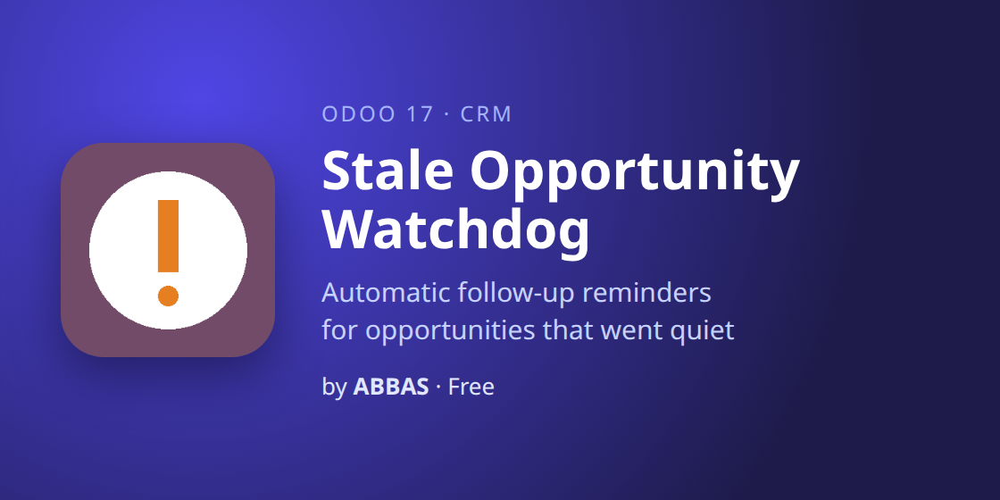
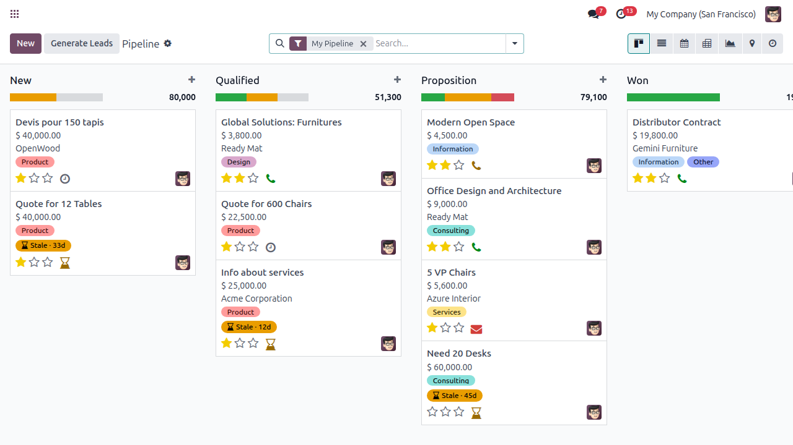
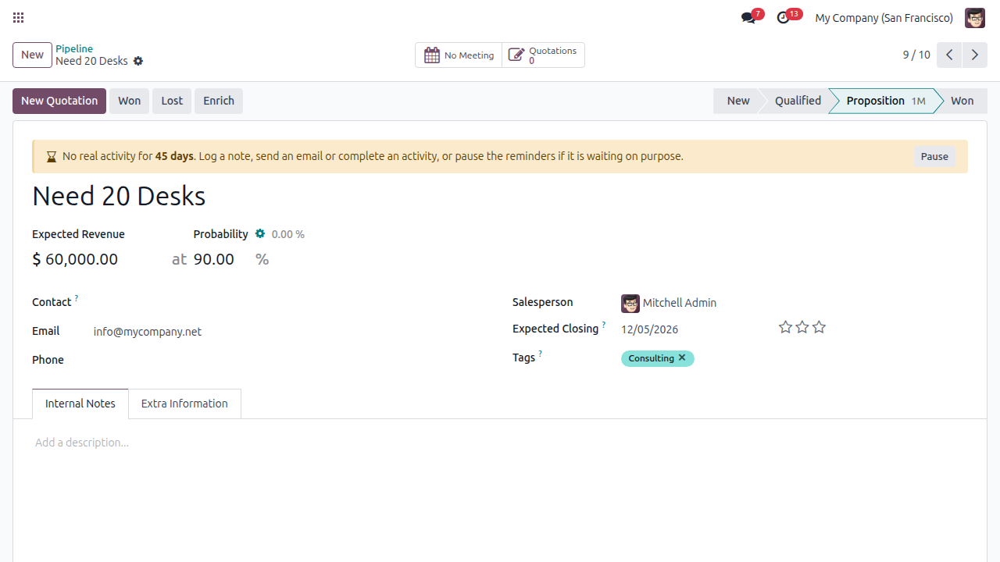
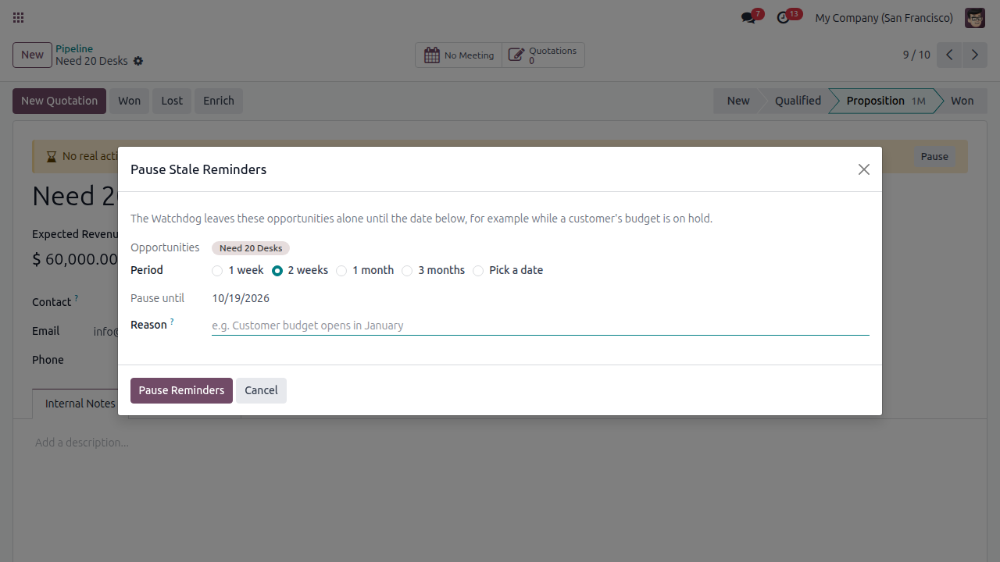
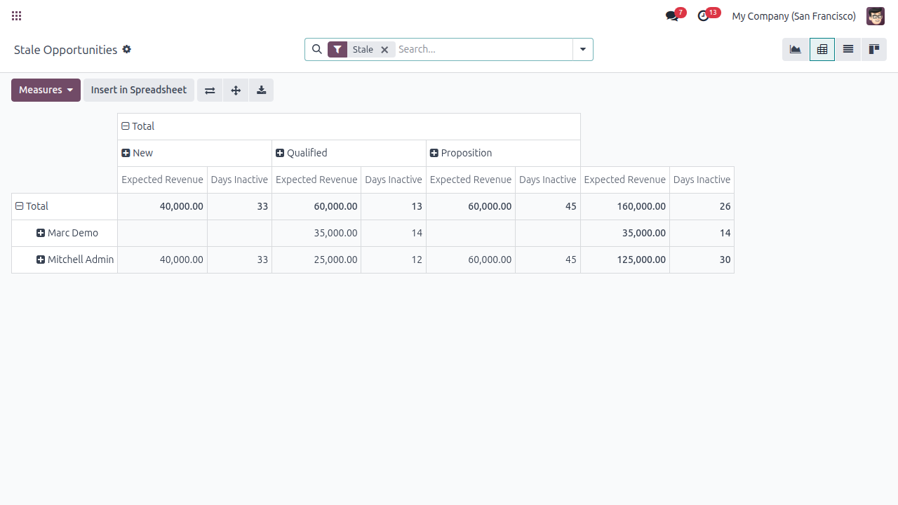
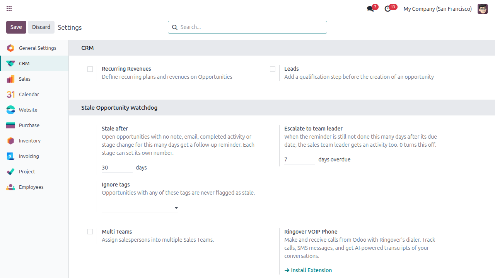

Find the deals that went quiet, before they are lost

Every day the Watchdog checks your open opportunities for real activity: a note, an email, a completed activity or a stage change. When a deal has had none for too long, it is flagged in the pipeline and its salesperson gets a follow-up reminder. If nobody acts, the team leader hears about it.





addons_path) and restart Odoo. On Odoo.sh, push the folder to your repository instead.Write to me and I will answer myself. I also build custom Odoo modules and integrations.
abbasodolution@gmail.comThank you for choosing this module! I am Abbas, an Odoo technical and functional developer. See demos and tutorials on YouTube, connect with me on LinkedIn, or browse all my apps and ask for a custom module on my website. Questions are always welcome through the support page.